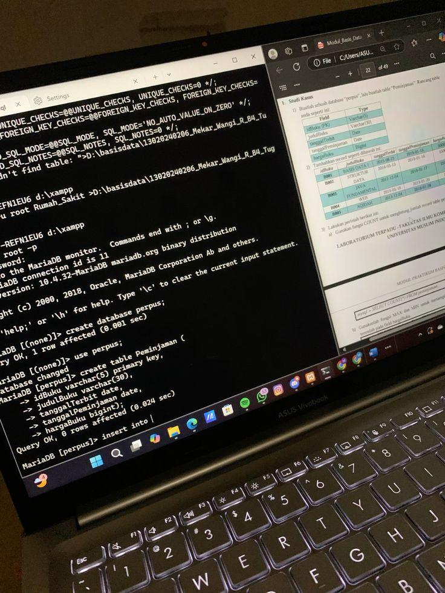

ORGANIZE • MANAGE • ANALYZE
Pelajari cara menyimpan, mengatur, dan mengelola informasi secara terstruktur. Kenali bagaimana database menjadi bagian penting dalam sebuah aplikasi dan sistem informasi.
Jelajahi Materi
INTRODUCTION TO DATA MANAGEMENT
Database atau basis data merupakan kumpulan informasi yang disimpan secara terorganisasi sehingga dapat diakses, dikelola, dan diperbarui sesuai kebutuhan.
Dalam dunia teknologi informasi, database digunakan untuk menyimpan berbagai jenis data, seperti informasi pengguna, data siswa, transaksi, produk, dan catatan lainnya.
Dengan adanya database, informasi dapat dikelola dengan lebih terstruktur sehingga memudahkan proses pencarian, pengubahan, penambahan, dan penghapusan data.
Tabel merupakan tempat untuk menyimpan data dalam bentuk baris dan kolom.
Field merupakan kolom yang digunakan untuk menunjukkan jenis informasi dalam sebuah tabel.
Record merupakan satu baris data yang berisi sekumpulan informasi dalam sebuah tabel.
Primary key merupakan atribut yang digunakan sebagai identitas unik untuk setiap record.
Pembelajaran database dimulai dari konsep dasar penyimpanan data hingga mengelola informasi menggunakan perintah SQL.
Mengenal pengertian database, fungsi, manfaat, serta penerapannya dalam kehidupan sehari-hari.
Memahami tabel, field, record, serta hubungan antara data dalam sebuah database.
Mengenal jenis tipe data seperti INT, VARCHAR, DATE, TEXT, dan tipe data lainnya.
Memahami Structured Query Language sebagai bahasa yang digunakan untuk mengelola database relasional.
Mempelajari cara membuat database, menentukan nama tabel, dan menyusun struktur kolom.
Mengenal perintah INSERT, SELECT, UPDATE, dan DELETE untuk mengelola isi tabel.
Mengenal konsep hubungan antar tabel serta penggunaan primary key dan foreign key.
Mengenal perangkat lunak untuk membuat dan mengelola database, seperti MySQL dan MariaDB.
Mengetahui fungsi dan manfaat database dalam pengembangan sistem.
Mampu menentukan tabel, field, record, dan tipe data.
Mampu menggunakan perintah dasar untuk mengelola informasi.
Mampu merancang dan membuat database untuk sebuah kebutuhan.
Beberapa perangkat lunak yang dapat digunakan dalam pembelajaran database:
Database digunakan dalam berbagai sistem yang membutuhkan penyimpanan dan pengelolaan data.
Untuk menerapkan materi yang telah dipelajari, siswa dapat mencoba membuat proyek berikut:
Pelajari cara mengelola informasi, bangun pemahaman teknologi, dan ciptakan sistem digital yang lebih terorganisasi.
Kembali ke Katalog RPL